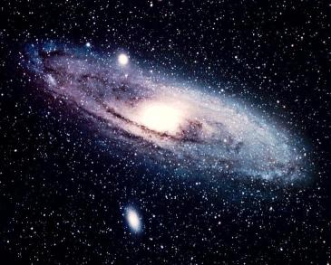
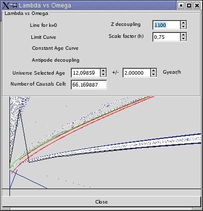
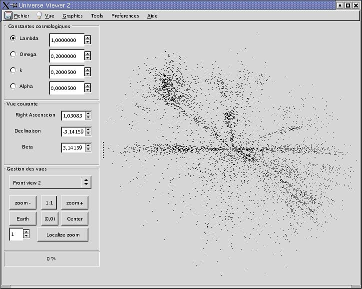
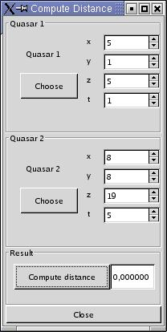
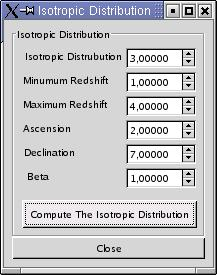

U.V.- Universal Viewer - Documentation

Preface from the authors
1994/1995
This software was conceived within the framework of a data-processing project
being part of the formation of Physical DEA the "of the particles, Mathematical
physics and Modelisation" of the faculty of Aix-Marseilles II. This
project was realised in three months and could not be the subject of a thorough
research of the errors. We thus hope for all your indulgence if, as
it is extremely probable, from the errors come to disturb your work.
We also hope that this program will be useful for you and effective object
of work. Programmers: Remi Lafaye and Lionel Spinelli.
2002/2003
This software has been updated and modified during a computer studies's project
which was part of 4 students in Computer Sciences of the University Aix-Marseille
I.
Programmers: Vincent Lecoq, Xavier Laugier, Pascal
Bonnet, Christophe Crotta.
I/ PROGRAM SUBJECT: OBJECTIVES
Astronomers have noticed, from observations of the universe on a large scale,
that large objects ( like galaxies, quazars) can be classified in structures
called LSS (Large Scale Structures). The fact that their distribution is
not homogeneous, as we thought at the beginning, encouraged us to look for
the causes of this non-homogenity and its effects on the models of the universe
that we know(assertions, invalidations). To do so, astronomers need a tool
which enables them to see LSS in their space-time dimensions, To see their
evolution according to the numerous cosmology models and to have precise
data on the possible existance and the consequences of these models. It was
at the end that U.V. was conceved. It gives access to projections of structures
in six views of space-time dimensions and numerous graphs and factions which
helps in analysing in the data obtained.s
II/ POSSIBILITIES OF UV
II.1/ DATA ANALYSIS
U.V. works on an ASCII file formatted as follows: RightAscent(a)
Declinaison(delta) Redshiftd(z). In the actual version , this
file is the Burbridge's quasars catalog. With the cosmological constants
lambda, omega, k, alpha ( lambda + omega -k + alpha
= 1), U.V. determines the positionning of each quasar in a four dimension
space. This calculation is done with the comoving parameter tau(z):
tau(z) = sqrt{k } _ * integrale(dR/sqrt(R(P))) on
[ 1/1+z, 1 ] with P(R) = lambda*R^4+Omega*R^2-k*R+alpha.
II.2/ SIX VIEW PROJECTIONS
With the preceding calculations, U.V. gives projections of quasars on views
defined by the bases( P,Q,R,T) where( P,Q,R) is a base in space and T is
a vector defining the fourth dimensions time. By convention, earth is the
vector (0,0,0,1) = T ( The age of the universe at our era is by norm = 1)
We thus obtain 6 views:
- 3 of them are views where the vector T is implied. These views are named
Face on views.
- The 3 others are euclidian views. They are named Edge-on views.
A real-time animation of the continuous variations of cosmological constants
can be obtained because U.V. executes quickly. This animation occurs in the
main window.
To allow the observation of the skies in all directions, the space-base (P,Q,R)
is constructed as follows:
We suppose E=(e1,e2,e3) the cannonic base of space, we take E'=(e1',e2',e3')
the isomorphic base of E, where e1' has spherical coordinates (a,delta) inside
E. We can construct E''=(e1',e2'',e3'') with e2'' and e3'' being the respectative
images of e2' and e3' in the rotational angles beta around e1'. We
can thus write (P,Q,R) = (e1',e2'',e3'').
The user can continuously vary a,delta and beta, which allows
him to see space in all directions. Here too, the animation is a real-time
one.
II.3/ SUPPLEMENTARY DATA
U.V. also gives access to many functions, giving supplementary data.
II.3.1/ SECONDARY PROJECTION WINDOWS
As we have seen before, U.V. shows space-time in six views. Each of these
views can be observed, one after the other in the main window. To allow the
use to see the structures of space-time, U.V. allows the opening of six secondary
windows, each containig one of the six projections. The real-time animations
of continuous variations of the parameters are then applied to these windows.
II.3.2/ GRAPH R=f(t)
The caracteristic dimension of the universe is named R and t represents time.
This graph shows the variation curve of R against time and the age of the
universe( R is equal to 1 by norm). T is calculated in terms of R by the
following formula: t(R) = integral of(r.dr/sqrt(P(r))) on the interval
[ 0, R ].
It can be noted that U.V. realizes real-time animation of the variations
of cosmological parameters.
II.3.3/ GRAPH 1/sqrt(P(R))
This graph is that of the function R->1/sqrt(P(R)) which is the
integral function( t) in the comoving distance calculus.
U.V. gives access to real time animations of the variations of cosmological
parameters there too. This allows to see the evolution of the integral(in
t) and to locate the particuralities to come.
II.3.4/ GRAPH tau(Z)
This graph allows the visualization of the comoving distance of quasars according
to their redshift in a given cosmological model. The continuous variations
of cosmological parameters are real-time animated.
II.3.5/ GRAPH lambda vs omega

This is the most interest graph part of all.It contains many curves which
allows the user to select a cosmological model by taking into consideration
the restrictions imposed by physics or by itself. The graph contains:
1- The line k=0 which correspond to the universe at null curve.
2. The limit curved after which the universe is said to be bounced.
3. The constant-age curve in two parts; it fixes the region where the universe
has an age, which is between the limits showed above the diagram and which
can be modified in near-real-time.
4. Constant curve of the number of causal cells. The value can be fixed by
the user. U.V. can also calculates the number of causal-cells in the corresponding
model by the choice made on the graph.
Nota: This graph needs some seconds to calculations and so to be loaded.
II.3.6/ ISOTROPIC SIMULATION
This simulation was made to allows the user to have a better view on the
effects of distortions due to cosmological models. This option creates a
set of quasars which are placed isotropically in the chosen model, in a cone
of chosen views.
III/ USE OF U.V.
III.1/ GENERAL VIEW OF THE INTERFACE

The window of U.V. can be categorised in 3 sections:
1. The graphical window where the universe is represenred according to cosmological
constants and projection vectors chosen.
2. The command buttons which allows the adjustments on cosmological-constants
values and the coordinates of projection-vectors.
3. The menu which gives access to other options of the program.
III.2/ THE ERRORS
When recoverable error occurs during the program's execution, the user is
informed through a dialogue box of the nature of the error. The errors are
mainly of the types that follows:
1. File errors: If the chosen file does not exist or is not of the required
format.
2. Calculation errors: If the cosmological constants values give expressions
which can not be calculated by the given algorithmic expressions.
III.3/ DATA FILE LOADING
By convention, when U.V. starts, it look for the file: "./Data/Burbridge.txt".
If U.V. doesn't find it, no data is loaded. To open a new data file, the
option "open" of the "file" menu is used. A file selection box opens and
waits for the file and if an error occurs, a dialogue box opens warning about
the error.
Nota: The loading of a file can take few seconds.
III.4/ CHOICE OF COSMOLOGICAL CONSTANTS
There are 2 ways to choose the values og cosmological constants.
III.4.1/ IN THE MAIN WINDOW
The gadgets to modify the cosmological constants are situated on the top
left part of the main window. These gadgets are composed of three parts:
1. The push-buttons: Only one at a time can be used. It then gives the fixed
values of the three others using the equation: lambda+omega-k+alpha=1.
2. The constant values can be edited directlyfrom the board. Nota: Always
click on Return after giving a value to assign it. If the Return button is
not clicked, the value will be disgarded.
3. The arrows which decrease "<" or increase ">" the constant corresponding
to a fixed value( adjustable).
III.4.2/ WITH THE HELP OF THE GRAPH lambda vs omega
In the "graphics" menu, the option "lambda vs omega" gives a view
showing regions of the plane(lambda, omega) according to the models
of the universe. The "select a model" button allows to select a point by
mouse-clicking on a point of the graph. This determines omega and
lambda, which gives a model, due to the fixe alpha and the
equation that links the 4 cosmological constants.
III.5/ PROJECTION CHOICE
III.5.1/ THE PROJECTION'S POINT OF REFERENCE
As we have said earlier, the projection base is made to be function of 3
parameters:
1. a, the vertical rise of the 1st vector.
2. delta, the declination of the 1st vector.
3. beta, the rotational angle of the isomorphic base around the 1st
vector.
These 3 parameters can be changed, either using the corresponding around
"<" and ">", or by acting directly on the appropriate text fields-
always click on 'return' afterwards).
III.5.2/ THE ZOOM
U.V. allows to zoom in part of the main windows. this zoom option contains
many options:
- center: places the center of the enlarged zone on a point selected by mouse.
- (0,0): places the center of the enlarged zone at the origin of the reference.
- earth: places the center of the enlarged zone on earth.
- zoom+: enlarges the size of the zone by one factor.
- zoom-: reduces the size of the zone by one factor.
- *1: brings the zone to its original size.
- localize zoom: indicates the enlarged zone by a coloured square on the
main window and on the active secondary windows.
III.5.3/ THE VARIOUS VIEWS
U.V. gives 6 different views, each of which can be observed on the main window,
by using the menu-bar situated underneath the zoom. U.V. also allows these
views to be observed on external secondary windows. To do so, the view can
be selected in the menu "views". To close the secondary windows for example
to prevent useless calculations, the "close" button is used. The active windows
are specified in the "views" menu by active push-buttons and can be disactivated
in the menu.
III.6/ OTHERS TOOLS
III.6.1/ CALCULATION OF THE DISTANCE BETWEEN 2 POINTS

U.V. calculates the distance between 2 objects. To do so, the "distance"
option must be chosen in the "tools" menu. Two corresponding points are chosen
using the mouse after clicking the "choose" button. If the program finds
a point corresponding to the data, it surrounds it with a coloured square.
Otherwise, an alert message is displayed and ask the user to make another
choice.
III.6.2/ THE VARIOUS GRAPHS
As seen before, U.V. gives access to multiple graphs of complementary data.
These graphs are:
- The graph of the evolution of the universe's age.
- The graph of the function to be integrated to calculate the comoving distance.
- The comoving distance graph.
- The graph of selection of the cosmological model( chosen).
All these graphs are accessibles in the "graphics" menu.The active windows
are specified in the "views" menu by an active push-button, which can be
disactived by selecting them once more in the menu.
III.6.3/ THE ISOTROPIC SIMULATION

This simulation is accessible in the "tools" menu. When being opened, U.V.
considers the cosmological model chosen in the main window and ask for:
- The number of quasars wanted.
- The minimal volume reached by the quasars.
- The maximum volume reached by the quasars.
- The vertical rise of the axis in the principal view.
- The declination of the axis in the principal view.
- The opening half-angle of the observation core.
Once the data is entered, U.V. goes into the normal calculations and behaves
like with any data file.
III.6.4/ THE PREFERENCES
The "preferences" menu gives access to:
-"calculus" which allows to make variations in the data used in the (calculus)
calculation of integration.
-"arrows" which allows to change the amount of continuous variation of cosmological
constants and of reference angles.
-"options" which allows the change between degrees and radians and to modify
the number of data treated.
The end.